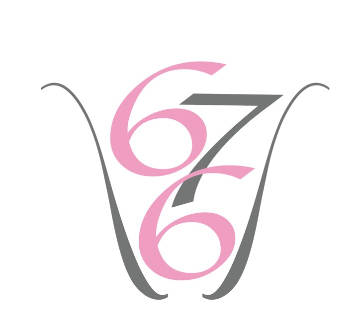

Rólunk
Kata és Niki, jóbarátnők, az önfejlesztés megszállottjai vagyunk.
Folyamatosan és szenvedélyesen ötletelünk, egyre jobb és nívósabb dolgokat találunk ki és valósítunk meg.
A  Hat hét alatt hat Projektünk akkor született meg, amikor az önfejlesztésünk azon szakaszához értünk, amihez nagy szükség lett volna önbecsülésre, önbizalomra, belső erőre, és nem volt…
Komoly kutató munka elvégzése után összeállítottunk magunk számára egy programot, amivel ezt hatékonyan el lehet érni.
A Programot azért hoztuk létre, mert felismertük, hogy nem csak nekünk van szükségünk és igényünk arra, hogy kiteljesedhessünk nőként és megéljük a női(es)ségünket, hanem nagyon sok nő küzd ezzel a saját életében.